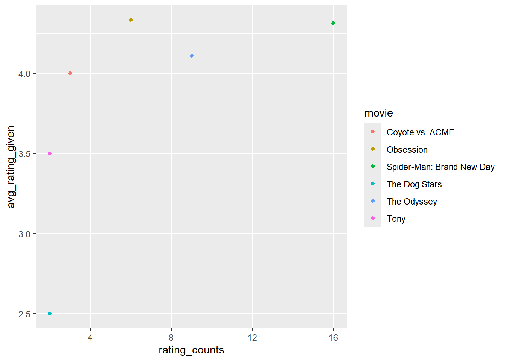

For Assignment 2A, I used Rotten Tomatoes’ article titled “30 Most Popular Movies Right Now: What to Watch In Theaters and Streaming” to choose six movies currently in theaters; The Odyssey, Spider-Man: Brand New Day, Tony, Obsession, The Dog Stars, and Coyote vs. ACME. I created a simple survey asking respondents to rate each of the movies they have seen from the list and to select “Have not seen it.” if they haven’t. To ensure data completeness each response is required, but the survey should only take about 30 seconds to fill out to avoid survey fatigue. Once responses have been collected I will design the SQL tables and start the analysis. The main problem I anticipate is low survey participation and a high volume of “Have not seen it.” responses which could limit the analysis.
Code Base Deliverable
In pgAdmin 4
Downloaded survey responses and saved file as csv, created a new table and imported the file
# CREATE TABLE survey_responses (
# id INTEGER,
# the_odyssey TEXT,
# spider_man TEXT,
# tony TEXT,
# obsession TEXT,
# the_dog_stars TEXT,
# coyote_vs_acme TEXT
# );
Then I created a second table to match the text rating responses to a numerical rating, and inserted values into the new table
# CREATE TABLE rating_lookup (
# response TEXT,
# rating INTEGER
# );
#
# INSERT INTO rating_lookup (response, rating)
# VALUES
# ('Hated it!', 1),
# ('Not for me.', 2),
# ('It was okay.', 3),
# ('Liked it.', 4),
# ('Loved it!', 5),
# ('Have not seen it.', NULL);
In RStudio
Load libraries
library(DBI)library(RPostgres)library(tidyverse)
── Attaching core tidyverse packages ──────────────────────── tidyverse 2.0.0 ──
✔ dplyr 1.2.1 ✔ readr 2.2.0
✔ forcats 1.0.1 ✔ stringr 1.6.0
✔ ggplot2 4.0.3 ✔ tibble 3.3.1
✔ lubridate 1.9.5 ✔ tidyr 1.3.2
✔ purrr 1.2.2
── Conflicts ────────────────────────────────────────── tidyverse_conflicts() ──
✖ dplyr::filter() masks stats::filter()
✖ dplyr::lag() masks stats::lag()
ℹ Use the conflicted package (<http://conflicted.r-lib.org/>) to force all conflicts to become errors
Connect to PostgreSQL
con <-dbConnect( RPostgres::Postgres(),dbname ="607",host ="localhost",port =5432,user ="postgres",password =Sys.getenv("POSTGRES_PASSWORD"))
Transformation process
These JOINs and UNIONs take the tables in SQL and create a data frame with 3 columns; the respondent ID from the survey_response table, a new column called movie with each movie title as values, and rating in numeric form from the rating_lookup table. I used LEFT JOIN to include all values.
movie_data <-dbGetQuery(con, " SELECT s.id, 'The Odyssey' AS movie, r.rating FROM survey_responses AS s LEFT JOIN rating_lookup AS r ON s.the_odyssey = r.response UNION ALL SELECT s.id, 'Spider-Man: Brand New Day' AS movie, r.rating FROM survey_responses AS s LEFT JOIN rating_lookup AS r ON s.spider_man = r.response UNION ALL SELECT s.id, 'Tony' AS movie, r.rating FROM survey_responses AS s LEFT JOIN rating_lookup AS r ON s.tony = r.response UNION ALL SELECT s.id, 'Obsession' AS movie, r.rating FROM survey_responses AS s LEFT JOIN rating_lookup AS r ON s.obsession = r.response UNION ALL SELECT s.id, 'The Dog Stars' AS movie, r.rating FROM survey_responses AS s LEFT JOIN rating_lookup AS r ON s.the_dog_stars = r.response UNION ALL SELECT s.id, 'Coyote vs. ACME' AS movie, r.rating FROM survey_responses AS s LEFT JOIN rating_lookup AS r ON s.coyote_vs_acme = r.response;")head(movie_data)
id movie rating
1 5 The Odyssey 2
2 11 The Odyssey 3
3 20 The Odyssey 4
4 17 The Odyssey 4
5 10 The Odyssey 4
6 21 The Odyssey 5
I used group by to analyze the movie column and summarize to get the average rating and the rating counts for each movie. The formula handles nulls by excluding them so that there isn’t an error and arranges in descending order by counts.
# A tibble: 6 × 3
movie avg_rating_given rating_counts
<chr> <dbl> <int>
1 Spider-Man: Brand New Day 4.31 16
2 The Odyssey 4.11 9
3 Obsession 4.33 6
4 Coyote vs. ACME 4 3
5 The Dog Stars 2.5 2
6 Tony 3.5 2
Visualization
The scatter plot shows each movie as a unique color in relation to their average rating and count.
ggplot(movie_data_avg, aes(x = rating_counts, y = avg_rating_given, color = movie))+geom_point()

Conclusions
I was pleasantly surprised that many more people than I expected completed my survey, which diminished my worry about low participation and I was able to complete a first round analysis. The next step could probably be trying to do some transformations based on the respondent ID, like grouping the data by respondent ID to figure out how many movies each person actually watched and rated.